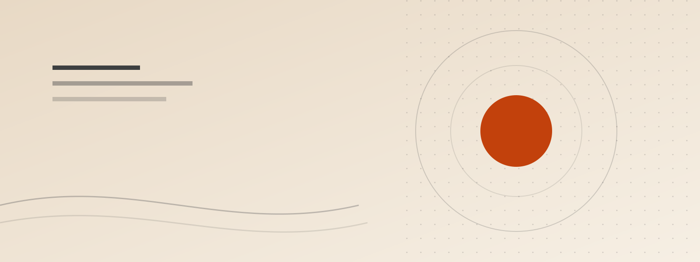

Quotes, projects, and a machine that does nothing
This site is small on purpose. Three things live here: a page of quotes I keep coming back to, five ideas I would like to build one day, and a useless machine that exists only to be switched off again.
What is on it
- Quotes Fifteen lines that survived being written down.
- Projects Five things I might actually build, and who each one is for.
- Machine A switch, a lid, and the oldest joke in interaction design.
Why this shape
All three pages are built from the same parts: one stylesheet, one navigation file and a little JavaScript. Nothing here needs a server, an account or a database, so the whole site is just files — which means it can be copied, opened and read without anything else working first.